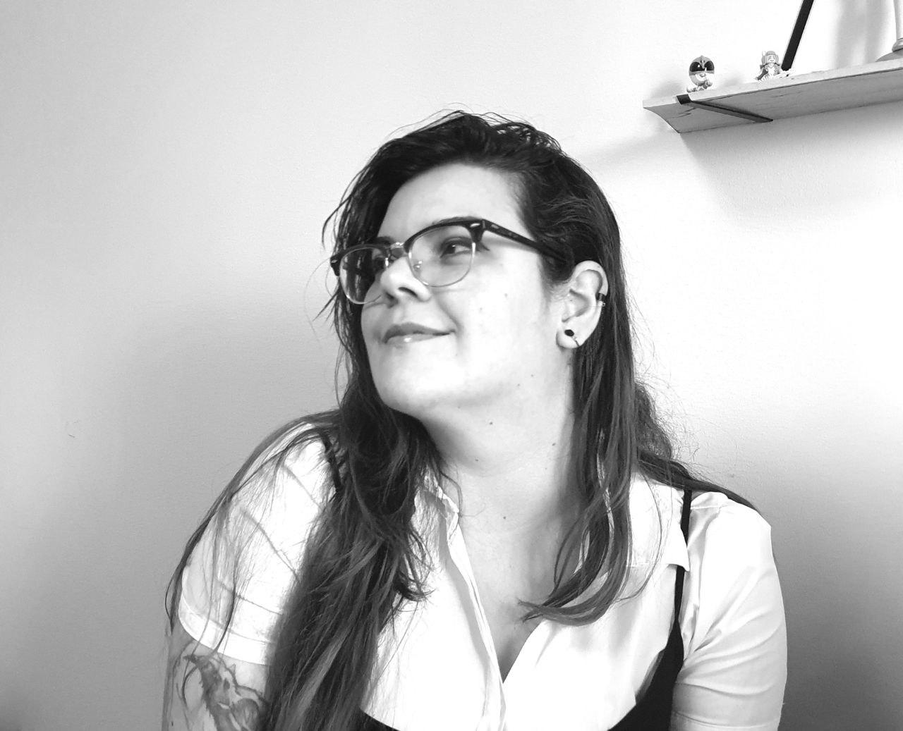

<div class="main-top">

    <article class="media">
  
      <div class="author-image">
        
      </div>
  
    </article>
    <article class="post">
  
      <div class="post-content">
        {{ page.highlight | markdownify }}
      </div>
    
    </article>
  </div>

  <article class="post">
  
    <div class="post-content">
      {{ content }}
    </div>
  
  </article>